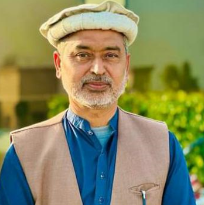

About Ghazali
Ghazali Model High School is a renowned educational institution that was founded on 15th February 2006. It has been providing quality education to students for over a decade now. The school is the result of the tireless efforts and dedication of its great director, Sir Anser Iqbal Aher, who worked day and night to make it a success.

Over the years, Ghazali Model High School has established itself as a leading educational institution in the region. It has earned a reputation for providing excellent academic and extracurricular facilities to its students. The school has a team of highly qualified and experienced teachers who are committed to providing the best possible education to their students.
The school has a spacious campus with modern facilities that provide an ideal learning environment for students. It is equipped with state-of-the-art classrooms, science and computer labs, a well-stocked library, and a playground for sports activities.
Ghazali Model High School is committed to achieving excellence in all areas of education. It encourages its students to be creative, innovative, and critical thinkers and prepares them to face the challenges of the future with confidence. The school also focuses on the overall development of its students, including their physical, emotional, and social well-being.
In short, Ghazali Model High School is a place where students receive an education that prepares them for a successful and fulfilling life. It is a testament to the hard work and dedication of its founder and director, Sir Anser Iqbal Aher, who has made it possible for countless students to achieve their dreams and aspirations.
Currently, over three thousand students are receiving education at Ghazali Model High School Phularwan. While the school does not offer A-level programs, its management system, education quality, and teachers are comparable to those found in A-level programs.
Location
Ghazali is located in Phularwan, Sargodha.